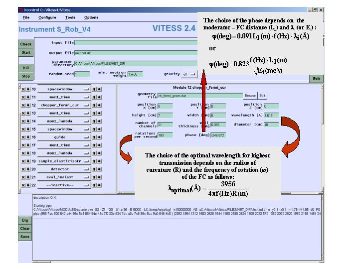

This module simulates a Fermi chopper with curved channels i.e. neutrons
are transmitted with a time AND wavelength modulation .
The geometry of the chopper consists of a horizontal cylinder with a wide
channel system built in vertical direction (when transmitting). At the entrance
all channels have the same height, at the exit the channel height depends
on the vertical position and other parameters in order to transmit all neutrons
having 0 divergence and the nominal (main) wavelength. See figure below.
The alghorhythm works with rotating chopper framework. Neutrons reflected
on the channel walls are absorbed.
Module parameters:
| Parameter Unit |
Description | Command option |
| position X, Y, Z [cm] |
center position of the Fermi chopper in the input framework | X, -Y, -V |
| height, width [cm] |
height and width of the Fermi chopper channel system | -a -b |
| optimal wavelength [A] |
optimal wavelength to be transmitted at highest intensity | -c |
| number of channels | number of curved channels | -l |
| wall thickness [cm] |
thickness of the wall between channels | -m |
| diameter [cm] |
diameter of the shadowing cylinder | -r |
| rotations per second | frequency of rotation | -n |
| phase [deg] |
dephasing angle at zero time | -q |
| geometry file | output file of the curved channel geometry (for scatter plot of the last two columns, first column: channel index, 0 = envelope) |
-G |
Example for the geometry file
GUI example:

Back to VITESS overview
vitess@helmholtz-berlin.de
Last modified: Fri Jul 4 16:43:41 MEST 2003 G. Zs.